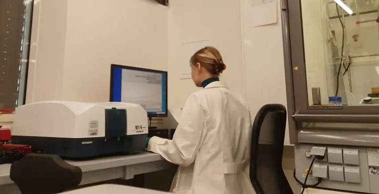
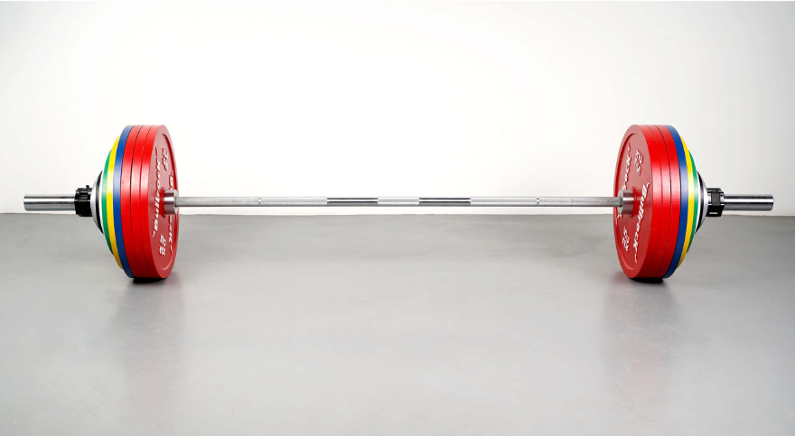

Chembaby
Python program that cleans UV/vis spectrometer measurement data before processing it into a visualization. Automates the following: exclusively including the desired rows of data, replacing unusable symbols, legend and axes naming, coloring and graph plotting.

This project involves training machine learning algorithms on an FBI violent crime dataset to make predictions based on specific circumstances in order to see if there was any substance in the hypothesis of a Special FBI agent in the TV show Mindhunter.

Exploratory data analysis of a dataset with results and various other stats of global powerlifting meets

Webscraping script that keeps track of the names of in- and outgoing cats at local animal shelters. The program automatically runs through 'Windows actions' whenever PC is active at a set time.
Interactive Power BI dashboard of the results of a survey held among data analysts.
Housing market data cleaning
Cleans a data set on a housing market through various SQL commands.
Covid Data Exploratory Analysis
Data exploration of 2021 covid data with SQL.